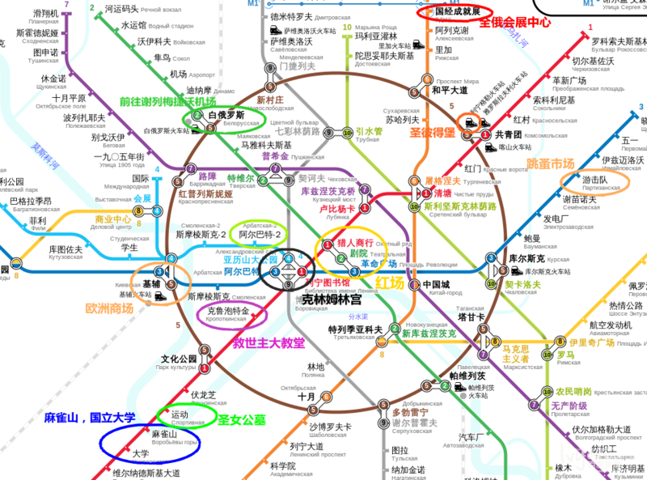

俄罗斯签证：
俄罗斯对中国大陆实行免签政策，但是这个免签政策取决于团队至少单次出行五人以上，而俄罗斯签证的类型主要分为：商务签证、工作签证、留学签证、旅游签证、邀请函签证这五种。而我们旅行者最关注的肯定是旅游签证，办理旅游签证需要为以下四种材料，签证有效期：15天仅限单次 办理周期一般为5-7个工作日
1. 有效护照及护照主页复印件及身份证复印件一份。
2. 2张照片（35X45，二寸白底彩色照片）
3. 签证申请表（应回答表内所有的问题）
4.俄罗斯旅行社签发的确认迎接外国旅游者函原件及其复印件
签证简单不过唯一的重点集中在了第四条，迎接外国旅游者的邀请函原件及其复印件，如果自行办理签证流程的确繁琐而且漫长，我们可以直接找某宝办理，不过价格大概在800左右，而大使馆所需要的费用不过400左右，这其中的差价就在于这张邀请函，虽然楼主为了方便选择了某宝，但是800元的银子白花花的流走依旧有些不舍，因此这里介绍一下邀请函的获得途径。1‘还是某宝，在某宝上有单卖邀请函的，大致为一张100（如图），第二种方法就是在出行前选择一家俄罗斯三星以上的酒店，以电子邮件的方式向酒店索要邀请函。不过要了邀请函基本都需要入住的。建议大家可以根据自己的情况，选择办理签证的方式。
旅游险
俄罗斯不是申根国，签证不和保险挂钩。不过出国旅游，买一份旅游险作为保障是非常有必要的。现在保险种类很多，可根据个人需求选择。应关注的主要是保障范围、保障力度、救援能力，特别是自己担心的事情是否保障范围内，比如疾病，航班延误，证件遗失，财物丢失。美亚，安联，曼福的保险都是不错的但各有差别，有些还很不实用。楼主经过综合比较，最后选择了“美亚万国游踪白银” ，网上投保，很方便。官网链接：//t.cn/Rc0NSl3
货币：
俄罗斯货币不需多言，当然是卢布了,卢布分为纸币与硬币两种，最近俄罗斯的经济形势非常不好，卢布贬值，与人民币兑换的汇率相当可观，大致在1；10上下波动，这为出行提供了大好的机会。在去俄罗斯之前最好还是在国内换好卢布比较方便，国外机场肯定汇率不尽如人意，所以楼主建议还是最好提前换好。卢布属于小币种建议在一些大的银行去兑换，如国内中国银行，工商银行一般都可以换到，但有时需要预约。预约时间2到5天不等.（这里还要强调一下，换取卢布就想和欧元一样要尽量换取小币额，因为大币额一般商铺不愿意接受，怕是假币等原因）
其次在俄罗斯银联也是很方便。而且楼主建议可以在国内办理一张华夏银行的储蓄卡，这样在境外每天第一笔取款，不收手续费。
银行卡及退税问题！
在俄罗斯银联卡并不好用，大多数商场和餐厅消费都可使用VISA或Master卡，不过很多小店、餐厅、交通购票还是需要用现金结账。VISA的也有刷不过去的时候，所以建议最好是带些现金。
俄罗斯没有退税，退税服务只限于欧盟国家。说白了就是可以使用欧元购物的国家。俄罗斯使用的是卢布而且不是欧元。不给与退税的。
通讯上网：
俄罗斯上网这里强烈建议办理当地电话卡，不要在淘宝或者机场选择漫游宝无线wifi。这里比一下价格，在俄罗斯办理电话卡只需告诉营业员你在俄罗斯境内停留的时间，他就会给你选好一个很合适的套餐。而我们选择了十天5g的流量包。价格才是人民币50元，而漫游宝按天收费最低每天二十五元。其次你要在国外还需开通国际漫游，这样就得一次性冲值500卢布，而俄罗斯电话卡50块钱足以保证国内国外电话畅通无阻。俄罗斯通讯有三大运营商，而我们选择了BEELINE“小蜜蜂商标一样的通讯站点，三大运营商在机场内随处可见，beeline！SIM卡买好充值卡后，102#是查询余额，103*充值密码#是充值。
俄罗斯有三家大的通信运营商，分别是Megafon、MTS和Beeline下面是三大运营商的logo，这三家都有专门针对游客的手机卡业务。Megafon的网速快，也是现在俄罗斯唯一一家4G移动网络运营商，Beeline资费比较划算，套餐多，移动网络速度一般，但覆盖率高，市中心区域的网速不错。MTS和Beeline比较类似，并不算太突出。另外还有一家是Tele 2，主要是市内拨打呼叫费用便宜，但信号不好，移动网络资费也较贵。
在机场便可以看到这些通讯公司的店铺，首先解决掉通讯上网所带来的烦恼，选择在俄罗斯畅通无阻的通讯电话卡。（这里不需要担心，卡类大小，因为俄罗斯电话卡分了不同的卡套，一开始就设计的天衣无缝，营业员会帮你安装设置好，可以正常使用）
语言:
俄罗斯的语言，纯纯的俄语，英语普及只有率百分之十，只有一些年轻人会些英语，但是偶尔也会在中国餐厅或机场听到几句简单的汉语。不过对我们俩个语言白痴来说，英语，俄语，我们完全不care秉承着无知者无畏的原则，加上我们最强项的肢体语言动作以及翻译器。我们已经万事具备，只待出发。不过在去俄罗斯之前，楼主还是很建议大家大致学习一些简单的俄语，英语流畅者当然是极好的。一是为了更好地表达友善，二是可能会对旅行产生别样的语言兴趣，而英语，咱们从小到大学到的基础语言，足以应付各种场合。
电源：
俄罗斯用的是欧标与德标插头，欧标的转换插头是双圆的欧式插头，也就是2个圆的。德标的转换插头和欧式的转换插头差不多，但是德标的插头直径比欧标的大一些，但是完全不影响使用这个可以网上买一个万能插头，可以应对全世界大部分插座转换问题，而且俄罗斯电压220V，50赫兹，跟国内一模一样，所以也不需要担心变压问题。
手机app：
如今出国最重要的是什么，那绝对是钱和app，正所谓有了钱和app，全世界任何地方都不在话下。注意：不过你得找到好的app。首先不得不说国外必备谷歌地图！（有了它你还怕走丢吗，你还怕不会坐车吗，统统在谷歌地图里一切都不是问题，所以谷歌首选）。其次下面我大概推荐一下我这次用到的APP。
时差：
莫斯科所在的时区是东三区,即:GMT+3。北京时间指的是东八区,即:GMT+8，北京和莫斯科相差5个小时，中国比莫斯科快五小时，也就是说北京现在是am10.00而莫斯科时间则是am5.00
住宿：
酒店住宿我们可以在缤客，Airbnb等预订网站进行选择，莫斯科住宿种类非常多，家庭酒店到星级酒店应有尽有，在莫斯科住宿在市中心附近交通方便，距离景点较近，但是房价相对来说比较昂贵，因为莫斯科地铁非常便捷方便，所以我们选择了在游击队站的三星酒店，设施齐全，距市中心乘车也非常方便，可供大家参考！
市内交通：
市内交通莫斯科首选当然是地铁，莫斯科的地铁，线路几乎将所有你需要到达的地方全部串联成点。
而圣彼得堡呢地铁反而没有公交车使用方便（公交车我们可以用谷歌地图查询，非常容易！）这里附上莫斯科与圣彼得堡的地铁图，作为参考！
莫斯科地铁，单程50卢布，因为在莫斯科乘坐地体次数比较频繁，这里就建议购买单独套票，20车次650卢布（买套票只需要到达窗口将价格和次数写在小纸条上，给俄罗斯售票大妈看一下即可，大妈都会懂得！！），套票一张即可，单长卡可不限次数刷，直到刷到爆，地铁进站需要刷卡，出站则不需要，这个为莫斯科地铁官网可以查询实时票价//www.mosmetro.ru/tariffs/unity/
初见莫斯科，你怎生的如此美丽！
世界那么大，我们都想去看看，这可能是每个人心中的愿望，不过因为各自的生活而所局限，所以我们平凡着生活在城市中，漫无目的的刷着手机。刷来刷去，偶然看到了飞往俄罗斯的航班，恰逢五月俄罗斯正处在春暖花开时节，而机票的价格顿时让我目瞪口呆，往返不到2500，北京直达莫斯科，这种赤裸裸的诱惑，完全承受不了任何抗拒，正所谓无巧不成书，在心中有所冲动之时，发现周边的事物都潜意识的在指引我关注俄罗斯，俄罗斯似乎正在向我发出一张特别邀请函，上天对我是眷顾的，因为工作原因而得有空闲假期，恰逢我的滇藏线小伙伴瓜马也有年假，我们毫不犹豫的拍下机票，开始筹办前往俄罗斯的一切计划！
为时半个月的计划以及办理签证，终于在5月14号落下帷幕，买好机票从北京出发前往世界国土面积最大的国度俄罗斯。
下了飞机乘坐机场快线大致行驶时间35分钟左右，就到达了终点站白俄罗斯火车站，天气大好所以我们决定趁此时先去红场感受一下莫斯科城市的心脏。
从剧院地铁站出来，就到达了俄罗斯的中心文化圈，走出地铁口可以看到各种俄式小木屋，这些小木屋分别买着各式各样的食品，以及各种水产鱼类，排队人数也不少，穿过这些小木屋就可以看到与马路相隔一方的俄罗斯大剧院，左手边不远处就是红场最壮观漂亮的建筑之一莫斯科国家历史博物馆。
国家历史博物馆建于1872年，目前馆内各类藏品数量逾450万件，是俄罗斯收藏历史文物藏品最丰富的博物馆。博物馆红砖银顶，古典主义风格的建筑。小型塔楼顶的俄罗斯的国徽标志----双头鹰是博物馆的显著标志。从人类尚未出现的阶段一直到十九世纪末，博物馆的展品不仅包括俄罗斯境内各个时期的政治、军事历史，还包括日常生活的方方面面。一楼是前帝国时期的展品，二楼则是帝国(彼得堡)时期的展品。除了展品之外，博物馆的内部装饰也十分精美，尤其在一楼的各个房间，都看得出装饰风格对相应历史时期艺术风格的模仿。不过，博物馆的硬件设施较为陈旧，冬天室内并不暖和，大多数展品的标识也只有俄语，或许不出几年就将迎来大修。
门票：成人350卢布，18岁以下者免费，学生100卢布；语音导览300卢布
电话：495-692-3731
网址：//www.shm.ru
国际历史博物馆与红场相连，如果对莫斯科俄罗斯历史感兴趣的话不妨顺道参观，由于我们时间有限并没有进入参观，据说性价比还是蛮高的。不过从外观上看，这座建筑非常壮观，红白相间，如同积雪沉淀与建筑之上，可以想象到冬天的景色那就是白里透红红里泛白，美得不要不要的了。如同圣诞节般的色调。
历史博物馆正门口就是著名的朱可夫元帅的雕像，朱可夫将军被称为“不败战神”。先后参加两次世界大战，在从士兵到元帅的漫长军旅生涯中立下了举世公认的赫赫战功。第二次世界大战期间，他先后指挥了列宁格勒保卫战、莫斯科保卫战、斯大林格勒会战等战役，成功地粉碎了德国的侵略，并率领苏联红军攻占柏林。朱可夫为苏联卫国战争和世界反法西斯战争做出了突出贡献，成为俄罗斯民族英雄载入史册。朱可夫已成为战场上胜利的象征。
在国家博物馆面前的这座雕像由朱可夫当年在红场骑马阅兵时的一幅照片塑造的，它真实地记录下了这个辉煌的历史瞬间，在阳光下显得极其洒脱英姿，雕像建造于1995，朱可夫元帅深受俄罗斯人民的爱戴与尊敬。所以在俄罗斯你不仅能看到这一所朱可夫元帅的雕像。
历史博物馆左侧就是伊维尔斯基大门也被称作复活门，从复活门门洞向远看去就会看到那让人激动地建筑瓦西里升天大教堂，复活门中间有一个小小的礼拜堂这个叫做伊维利亚礼拜堂，小的如同我在北京所租的房间，但是内部设施华丽程度却和我的房间有着天壤之别。其实莫斯科在五月份在晴天风和日丽，有时甚至阳光强烈，所以基本春装衬衫可以应付一切，但是在这里天气波动率也是非常大，一到乌云阵雨天气，那会让你瞬间冷到想穿羽绒服，所以厚衣服还是需要带上几件以备不时之需。
当看到瓦西里教堂时，激动的我们就立即想近距离的接触它，所以毫不犹豫的穿过复活门，穿过复活门就进入了红场，在一旁可以看到喀山圣母大教堂，同样是一个小小的教堂。喀山圣母大教堂为了纪念击退1612年的波兰军队入侵而建造的，1936年喀山圣母大教堂与复活门因为阅兵的影响由斯大林下令而被拆除。现在的喀山圣母大教堂是仿照原来教堂的样子于1993年重新建造的。喀山大教堂拥有很多特别的传说，而喀山圣母也是俄罗斯教徒信仰寄托之一。
穿过喀山教堂，继续向前走我们就可以看到非常巨大的建筑，这所建筑就是莫斯科著名的“古姆百货商场”由于时间限制我们暂时先不进入。
红场的尽头就是莫斯科最漂亮建筑之一的，瓦西里升天大教堂。曾多次梦想可以来到红场，来看一看那华丽炫彩的瓦西里大教堂。如今天随人愿，终于来到此处，心情无比激动。在红场参观的游客非常的多，不时也会有拍摄婚纱照的情侣来此，显得红场格外朝气生机。
瓦西里大教堂被莫斯科看作是城市的标志由，这座教堂是由俄罗斯建筑师巴尔马和波斯特尼克根据沙皇和伊凡大公的命令主持修建，于1560年建成。教堂的名字是根据当时伊凡大帝非常信赖的一位修道士瓦西里的名字而取的。中央的塔高46米，共有九个金色洋葱头状的教堂顶。这九个教堂顶并不是一开始就有的，而是后来分别加上去的，瓦西里外观虽然非常华丽但是也有一段残忍的传说，传说在喀山战争中，俄罗斯军队由于得到了8位圣人的帮助，战争才得以顺利进行。为纪念这8位圣人才修建了这座教堂，8个塔楼上的8个圆顶分别代表一位圣人，而中间那座最高的教堂冠则象征着上帝的至高地位。·教堂建造完备后，为了保证不再出现同样教堂，伊凡大帝残酷地刺瞎了所有建筑师的双眼，伊凡大帝也因此背负了“恐怖沙皇”的罪名。